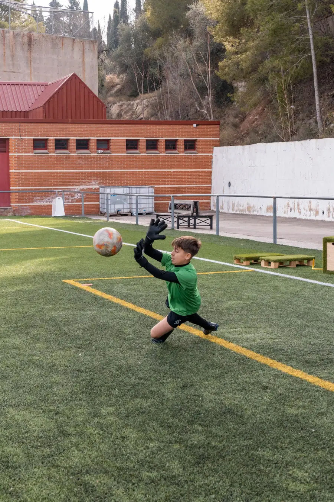

Técnica
La base que sostiene cada parada
Trabajamos los gestos específicos del puesto, desde la posición básica hasta la acción final, con una progresión adaptada a la edad y al nivel de cada alumno. Repetición de calidad, corrección individual y un nivel de exigencia que convierte la técnica en automatismo.
Qué trabajamos
- Técnica específica del portero
- Blocaje y despeje orientado
- Juego aéreo
- Habilidad con los pies
- Desplazamiento del balón
- Velocidad de reacción
- Potencia de salto
- Agilidad y coordinación
- Fuerza y resistencia
Cómo: material y ejercicios exclusivos, diseñados por porteros para porteros, con feedback individual en cada repetición.